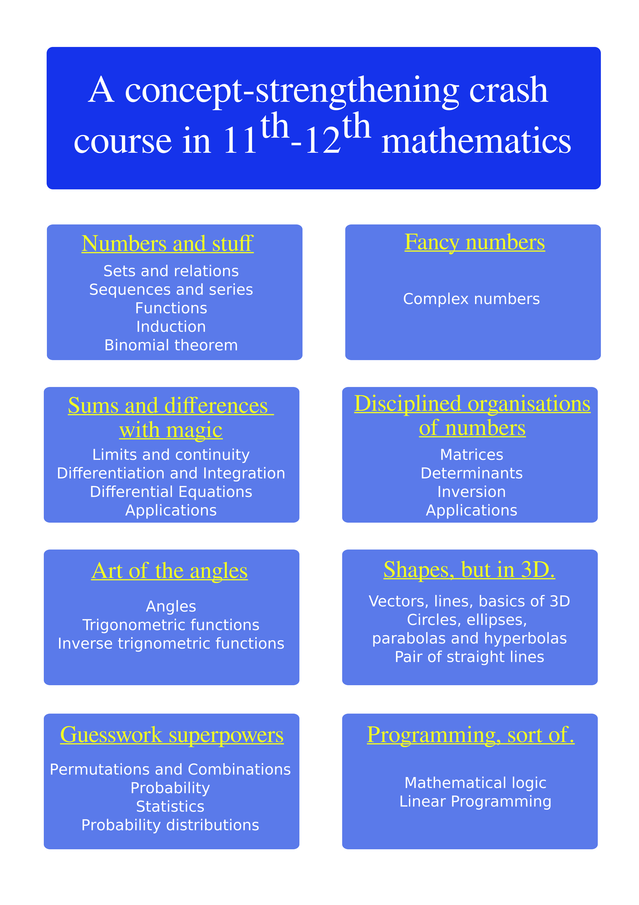

A concept-strengthening crash-course in 11th-12th mathematics |
|  |
What you can expect:In this course you can expect to learn, revise or strengthen fundamental concepts from all the topics in mathematics that an 11th-12th standard student needs to be strong in by the end. You will know everything you need to know to score great marks in 12th board and develop important skills to tackle competitive exams. |
Who is the teacher?My name is Yashodhan. I am a physicist-programmer.I am a BS & MS dual degree graduate in Physics from IIT Madras. I had 221/360 in JEE Main 2016, and an All India Rank of 4116 in JEE Advanced 2016. I am 26 years old and I have professional experience in astronomical research, software engineering and teaching. |
More details:Please watch this space for more details such as class timings, registration, fees, schedule etc. This webpage will also contain class material. |